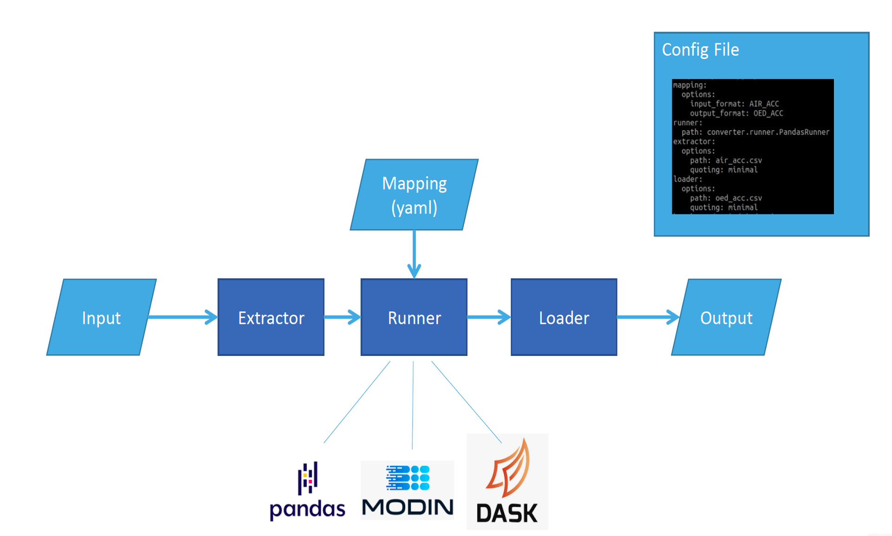

User Guide¶
This user guide will get you started with transforming exposure data in the Open Data Transformation Framework.
There are two options for running transformations: using the command line or via the user interface.
Both methods require a local installation of the Python package.
Installing the package¶
Download the Python package from the project GitHub pages at github.com/OasisLMF/OpenDataTransform.
Install the Python package using
pip install git+https://github.com/OasisLMF/OasisDataConverter.git
You will require Python version 3.8 or higher, and pip to be installed. To install Python, follow instructions at the Python For Beginners page.
Inputs¶
Configuration information: This defines the input file names and file paths of input, output files, the mapping files to use, and other choices such as the type of runner (which affects transformation speed). A configuration file written in .yaml format is required to run the tool in the command line. This configuration file can also be loaded into the user interface, or the transformation can be configured directly in the user interface and saved to file.
Input data: Flat file input (account, location, reinsurance files in .csv format) or SQL database.
Mapping files: One mapping file for each input file. These describe the data types to be included in the transformation, and the transformation operations defined by the user. The files are in .yaml/.yml format, more explanation on .yaml can be found here.
Data validation definition: One validation definition file for each input file. These describe the data validation metrics that will be performed to check the transformation. The file defines the fields and operations (sum, count, etc.) required to check data was transformed correctly. The files are in .yaml/.yml format.
The Open Data Transformation Framework uses an extractor to read the input data, a runner to perform the transformation based on the mapping file, and a loader component to output data in the defined format and location, as shown below.
{kind=link}
Outputs¶
The transformation will produce:
Output data: Data is transformed to the destination format defined in the configuration and mapping files, and saved as .csv files. One file is saved for each account, location, and reinsurance as required by the destination format. The destination file name and path are defined by the user in configuration.
Log file: A log file, named <date>-<time>–converter.log, is produced, containing the configuration information and confirmation of of successful transformation, or a record of errors encountered.
Data validation files: A data validation file, containing a comparison of various metrics in both the input file and output file. For example, the sum of Total Insured Value grouped by Occupancy Type and Currency. The fields and operations are defined by the user in the validation definition files.
Mappings¶
Mappings describe how columns will be converted between two data formats. Mappings are made up of multiple mapping files that describe how convert from one source format to another destination format - i.e., one mapping file is defined per model-pair. A mapping file can be used to define a forward transformation (e.g., Model A to B) and a reverse transformation (Model B to A).
Mapping file templates are available in the GitHub repo. These are provided as ‘default’ mappings for use as-is or as a base from which to create new mappings. By copying and editing these, a user can tailor the mapping for a specific case (a portfolio or user may require a specific match-up of occupancy code in the source and destination formats, which is not used in the default file). The templates can be updated to reflect changes in model formats - to account for changes to field names or field values or the addition/deletion of new fields or field values in the latest version.
The mapping file header describes the mapping version, the source and destination formats (and their versions), and information about when and who created the mapping.
The file defines the source field data types and the transformations to be performed. Transformations can copy one field into another, substitute field values using a replace function, or include conditional transformation using a where clause.

An example mapping file for CEDE to OED conversion are available for account files and location files.
Mappings can also be linked together in the configuration file to transform data from one format to another even if a direct conversion between the two does not exist. For example, a mapping exists from model A to B, and another exists from model B to C. In the configuration information, the source can be given as A and destination as C, and the transformation will automatically route data from A to B to C.
The Mapping Files section provides more information on the contents of a mapping file.
Executing a data transformation¶
A data transformation can be executed via the User Interface or the Command Line. Either method will allow to use flat file input data, or a database connection.
The Executing a data transformation section provides more information on the contents of a mapping file.
Reporting¶
The tool reports portfolio metadata and data validation metrics to a log file, which will be stored in the same location as the config file.
Portfolio metadata can be reported via the configuration file and UI. This data is recorded in the log file, and summarises the portfolio that has been transformed. It includes contextual information about the contents of the file, which are not read by the tool; for example the region, line of business, and complexity of the portfolio attributes. It also records information about the data of test, analysts running the test.
Data validation files are .yaml files. They require the fields, operator, and any grouping required to summarise the data in both the input file and output file.
The Reporting section provides more information on setting up, completing and interpreting the metadata and validation.